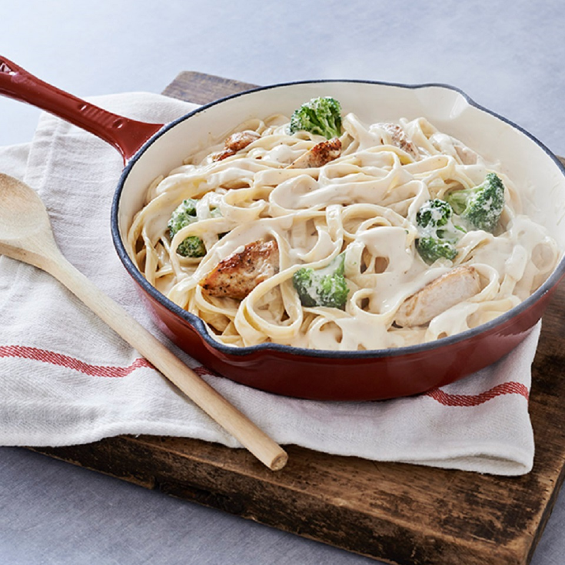

Chicken Alfredo W/ Broccoli

Descprition
If you’re looking for a delicious gourmet Italian dinner, you’re in the right place! My Italian husband Jamison loves his pasta dishes, so when I serve up a plate of chicken alfredo, it always puts a big smile on his face. I get it. There are so many wonderful flavors and textures that come together that it’s hard to resist.
- 1 tablespoon butter
- 1 ½ pounds skinless, boneless chicken breast halves
- 1 (16 ounce) jar RAGÚ® Classic Alfredo Sauce
- 1 (12 ounce) package frozen broccoli florets, thawed
- 1 (12 ounce) package fettuccine pasta, cooked according to package directions
- Melt butter in large nonstick skillet over medium-high heat and cook chicken, in batches if necessary, stirring occasionally, until chicken is thoroughly cooked. Remove chicken and set aside.
- Stir sauce and broccoli into same skillet. Bring to a boil over medium-high heat. Reduce heat to low and simmer covered, stirring occasionally, until broccoli is heated through, about 5 minutes. Stir in chicken and cook, stirring occasionally, until heated through, about 2 minutes. Serve over hot fettuccine and sprinkle, if desired, with grated Parmesan cheese.